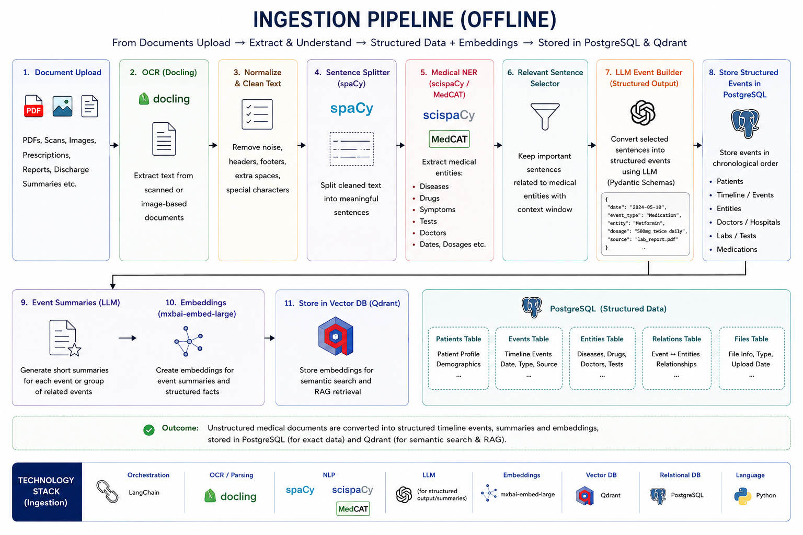
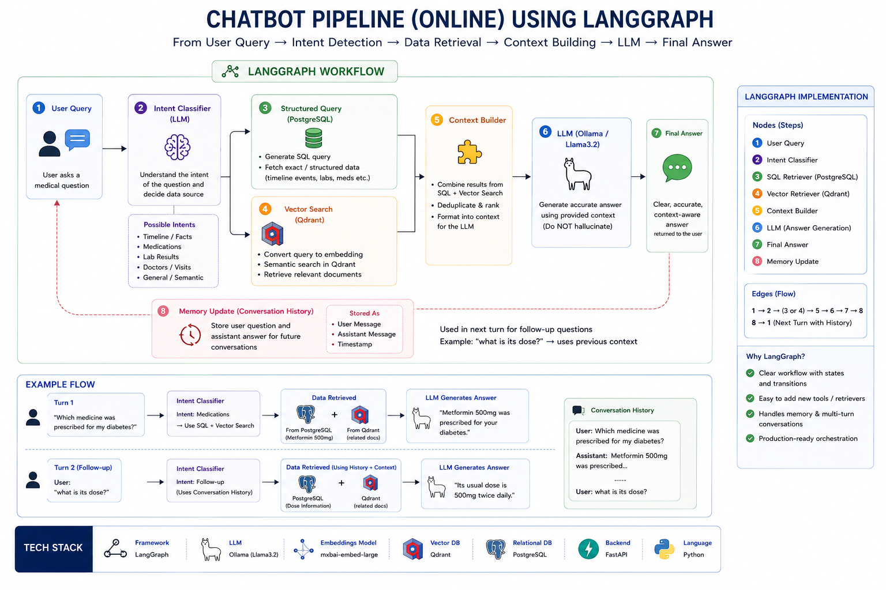

⚙️ Core System Workflows
MedMemory AI operates through two primary workflows:
- Document Ingestion Pipeline — Converts medical documents into structured medical memory.
- Conversational RAG Pipeline — Retrieves and synthesizes relevant patient history for AI-powered chat.
1. Document Ingestion Pipeline
This workflow transforms prescriptions, lab reports, discharge summaries, and clinical documents into structured medical records and semantic memory.
Execution Sequence
1. Document Upload & OCR
Users upload:
- Prescriptions
- Lab Reports
- Scan Reports
- Discharge Summaries
Documents are processed using:
PyMuPDF(PDF extraction)Tesseract OCR(images and scanned PDFs)
to obtain clean machine-readable text.
2. Text Cleaning & Normalization
Extracted text undergoes:
- OCR noise removal
- Whitespace normalization
- Header/Footer removal
- Basic formatting cleanup
to improve downstream extraction quality.
3. Medical Information Extraction
A local LLM analyzes the cleaned text and extracts clinically relevant information into a validated structured schema.
Examples:
- Doctor Name
- Hospital Name
- Diagnosis
- Symptoms
- Medications
- Dosage
- Findings
- Tests
- Recommendations
- Document Date
All outputs are validated using Pydantic models before storage.
4. Structured Document Construction
The extracted information is transformed into a normalized medical document object.
Example:
{
"doctor": "Dr. Sharma",
"document_date": "2025-01-10",
"diagnosis": ["Type 2 Diabetes"],
"medications": ["Metformin 500mg"],
"findings": ["HbA1c 9.2%"]
}
5. Hybrid Storage Layer
PostgreSQL
Stores structured medical records:
- Patient Profile
- Medical Documents
- Diagnoses
- Treatments
- Findings
- Timeline Metadata
PostgreSQL acts as the system's source of truth.
Qdrant
The document is summarized into a concise semantic representation.
Example:
Type 2 Diabetes diagnosed.
Metformin initiated.
HbA1c elevated at 9.2%.
The summary is embedded using:
mxbai-embed-large
and stored in Qdrant with metadata:
{
"patient_id": "...",
"postgres_id": "...",
"document_type": "...",
"doctor": "...",
"date": "..."
}
This enables semantic retrieval during conversations.
Storage Outcome
Medical Document
↓
OCR
↓
Structured Extraction
↓
┌──────────────┬──────────────┐
│ │ │
PostgreSQL Summary Metadata
(Source) ↓ ↓
Embedding
↓
Qdrant

2. Conversational RAG Pipeline
This workflow enables users to chat with their complete medical history using retrieval-augmented generation (RAG).
Execution Sequence
1. User Query
The user submits a question.
Examples:
What medications am I currently taking?
When was diabetes diagnosed?
How has my treatment changed over time?
2. Intent Classification
A lightweight LLM router classifies the query into one of three categories:
Structured
Requires exact database records.
Examples:
Show all medications.
Show my latest prescription.
List all doctors visited.
Semantic
Requires semantic understanding of historical context.
Examples:
Summarize my heart-related issues.
What patterns do you see in my health history?
Hybrid
Requires both structured records and semantic context.
Examples:
How has my diabetes treatment changed over time?
Compare my current treatment with previous treatments.
3. Retrieval Layer
Structured Path
The system directly retrieves relevant records from PostgreSQL.
Examples:
- Medications
- Diagnoses
- Timeline Events
- Reports
Semantic Path
The query is embedded and searched against Qdrant.
Retrieval is filtered by:
patient_id
to ensure patient isolation.
Hybrid Path
The system:
Query
↓
Qdrant Search
↓
Retrieve postgres_id metadata
↓
Fetch source records from PostgreSQL
This combines:
- Semantic relevance from Qdrant
- Structured accuracy from PostgreSQL
without requiring text-to-SQL generation.
4. Context Builder
Retrieved information is:
- Deduplicated
- Ranked
- Organized
- Compressed
into a clean context package.
Example:
Diagnosis:
Type 2 Diabetes
Timeline:
Jan 2023 → Diagnosis
Feb 2023 → Metformin Started
Jul 2024 → Dosage Increased
Relevant Notes:
Patient showed improved glucose control.
5. Response Generation
The compiled context is passed to a local LLM through Ollama.
The model is instructed to:
- Answer only from provided context
- Avoid unsupported assumptions
- Cite relevant medical history when possible
This significantly reduces hallucinations.
6. Conversational Memory
LangGraph maintains conversation state including:
- Previous user questions
- Previous AI responses
- Active patient context
allowing the system to handle follow-up questions naturally.
Example:
User:
When was diabetes diagnosed?
Assistant:
January 2023.
User:
Who prescribed the medication?
Assistant:
Dr. Sharma prescribed Metformin during the initial diagnosis visit.
Retrieval Architecture
User Query
↓
Intent Router
↓
┌────────────┬────────────┬────────────┐
│Structured │ Semantic │ Hybrid │
└────────────┴────────────┴────────────┘
↓ ↓ ↓
PostgreSQL Qdrant Qdrant
↓
postgres_id
↓
PostgreSQL
↓ ↓ ↓
Context Builder
↓
Ollama LLM
↓
Final Answer
